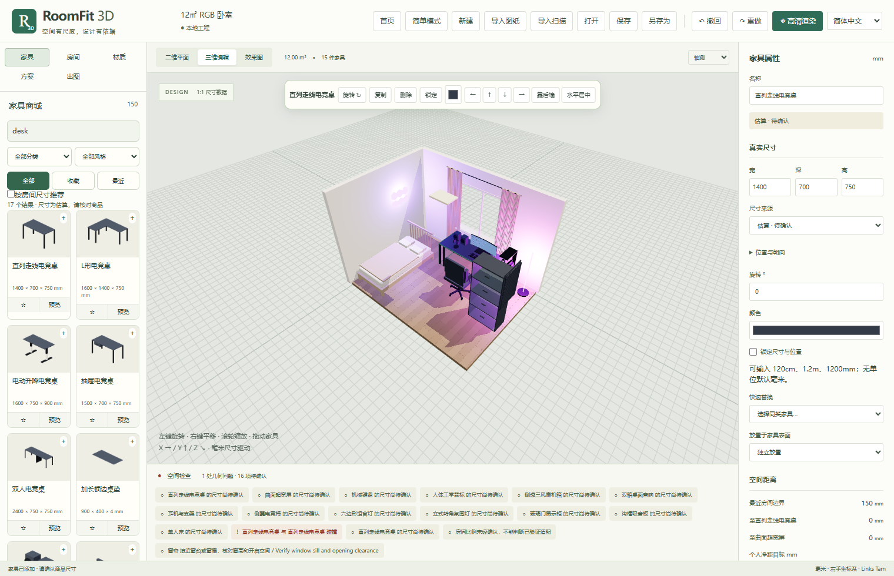

RoomFit 3D
0.2.0 · Pre-release
Open-source room planning · Local-first Windows app
Plan a room that fits your life.
From a floor plan to furniture and light.
150 structured assets
12 editable layouts
Local Cycles rendering
Actual Cycles output · Verify reference dimensions

Actual application interface
ROOM / FURNITURE / LIGHT
 Actual Cycles output · Verify reference dimensions
Actual Cycles output · Verify reference dimensions